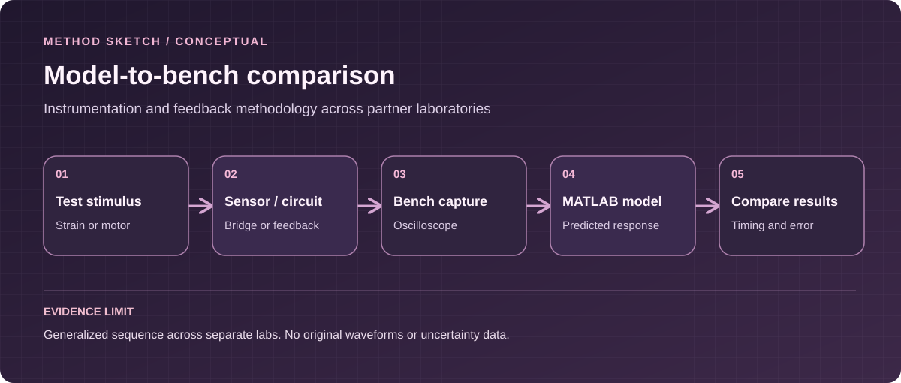

Engineering details
Challenge
Measure small strain signals and dynamic responses while implementing stable feedback control on real equipment.
Approach
Use a strain-gauge half-bridge and calibrated amplifier, an oscilloscope and function generator for frequency sweeps, MATLAB step-response simulations, and op-amp controller circuits on a DC motor board. Compare rise time, settling time, phase response, and overshoot between models and measurements.
Tools
MATLAB, P/PID feedback, strain gauges, Wheatstone bridge, RLC frequency response, oscilloscope, function generator, DC motor controller board.
Engineering method / explanatory sketch
From instrumentation to comparison
A conceptual flow shows why excitation, sensor conditioning, captured response, and a model must be distinguished when interpreting laboratory differences.

Documented outcome
The strain experiment characterized vibration near 49.3 Hz. Increasing proportional gain shortened measured rise and settling times, but P-control experiments showed roughly tenfold differences from the simulation; some PID measurements differed by over 50%. These discrepancies motivated stronger component and setup verification.